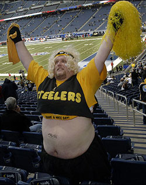
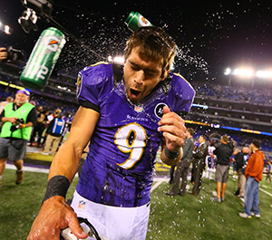
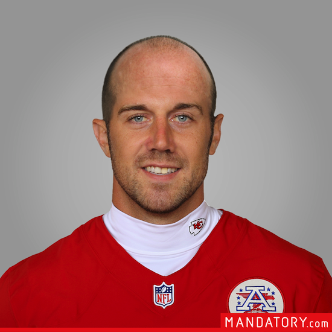
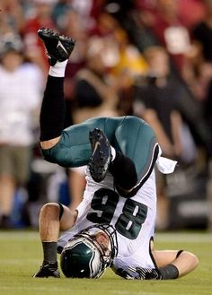
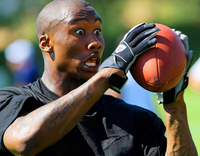
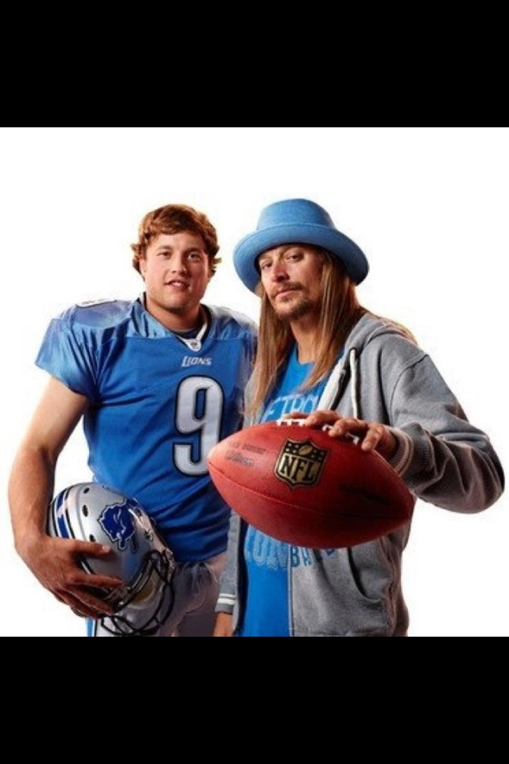
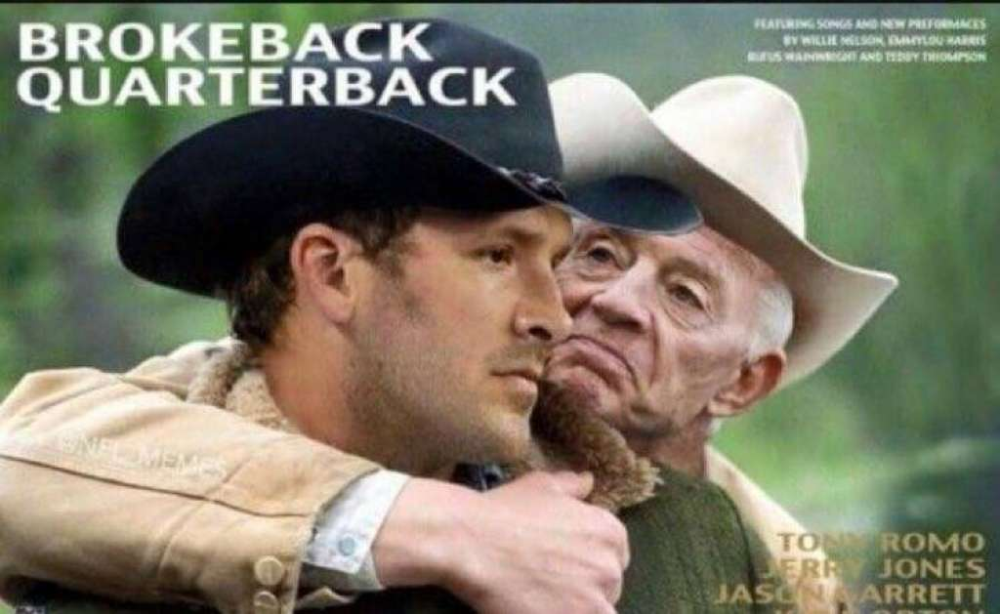
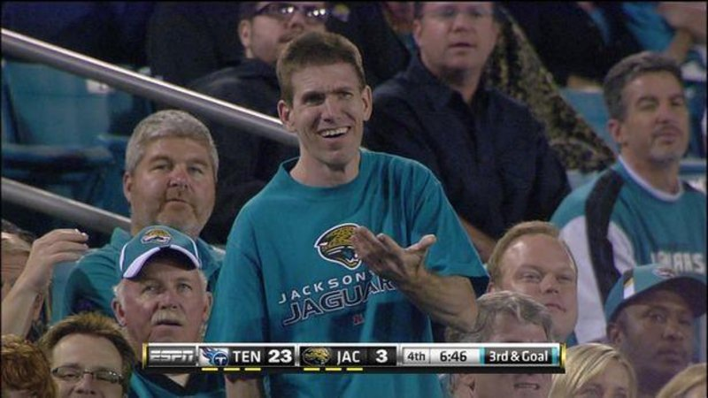
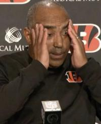

Week 7: DKE Fantasy Lore
Introduction
I was daydreaming the other day about where we were going to do our live draft (still pushing for Vegas) and at one point, it made me laugh when I thought about us all talking shit to each other 30 years from now. Yes, the game will be drastically different, maybe even non-existent, but to potentially hear someone say "I've been beating your ass for 30 years now" is incredibly amusing. In a lot of ways, yall are the people I keep up with the most, albeit indirectly most of the time. I don't do any of this with my Dallas or Georgia friends, and when I catch up with them, I'm trying to figure out what they have done for the last couple of years since I have seen them. Not so with yall. It feels like we are all talking (except Chaz) every week, jawing at each other or making jokes at the expense of teams, but its one way of keeping up with each other and I love it. I'm terrible at picking up the phone and calling people to check in, so this gives me a much better way of knowing whats going on.
As I continued to daydream, the thought of "fantasy lore" kept coming back into my head. Someday down the road Matt or Sam is going to say some absurd stat that we all just go crazy over, like Jared has beaten Sawyer the last 9 times with an average win of 1.2 points, and it will be glorious. The trophies will get bigger as we all get more money to play with, the drafts will be a blast if we can organize them correctly, and all of us will be invested because it's something that we look forward to each week. I'm ready to make a DKE history room in my house with busts of the highest scoring players/teams ever, the best managers, and the most epic games.
Yeah, its a daydream and we have only been playing since 2012, but I am invested in this group the most out of any other non-work non-charity group I am in. And sometimes you can equate this as a charity when you let Ean and Jared win. So I'm pumped when I think about the future when I can barely walk and am still talking shit to Willis or Ross or whomever else, pulling out insane stats over the years to beef up my case. The only thing we need now is someone to become a billionaire so we can have insane destination drafts and even better prizes. Who's it gonna be?
Recaps
SIN-CLAIRR!!!! vs. Turd Ferguson
Willis and I have a long history. It goes past the last couple of seasons, one of which he beat me on Monday night with Julio putting up 30 points (he needed 25 or so) in the semifinals of the playoffs. Some of the most epic games in league history have been played between us. It more than Georgia/Florida, or Georgia/Georgia Tech. I'd equate it to Georgia/Auburn, with deep roots, but less hatred and more respect. This game didn't disappoint as Willis put up a whopping 112.70 points, his second-most of the season. The problem was that I had my best game of the season, putting up 127.52 points, mostly behind the 2nd highest single fantasy point-total by a player this season (the only one who did better was on Willis' roster). Please don't leave me Zeke, those 39.90 glorious points made me forget you went to Ohio State and still wear a crop top. I knew that the two players that led the league in fantasy points last week (Melvin and Kirk) shouldn't get close to replicating their outputs, but Kirk still had a great game, putting up 24.92 points in a gun-slinging loss to the Eagles. Maybe the best part about my team is that AJ and Melvin had the two lowest point totals on my team and I still put up the most points by anyone in the league to date. Elsewhere on my roster, both Agholor and Engram (who is Eli's only target) got TDs, and I'm excited that my bench can still put up points too. Lord knows I'm going to need it when Zeke finally sits. Willis had an extremely impressive week and had one of the coolest-looking, most consistent point spreads from his players (Matt could tell you what the stdev was). Only two players got under 11 points, and even they had relatively good days. His receivers both got plenty of yards and a TD, hopefully showing that Julio can go back to his old ways despite a horrible game from the Falcons, Graham is getting all of the redzone targets in Seattle, and his LA players (D, Cupp and Goff) looked fantastic against a stingy Cardinals team. Excluding Derek Carr and the best kicker in the league, his bench doesn't look great. We know Martavis is unhappy, and Willis would benefit from a change in scenery. We know Derrick Henry should be the starter, but he got out-touched by a dude nursing an injury. I'm worried that Willis is going to have a hard time replicating this week, but lets hope for the best. I mean, it's always hard to get the second-most points in the league and the lose to the one guy who was better. I won't kick you while you are down.
Majors' NFL comparison: Andy Reid

Consistently good, and almost always has a great season, but can't win the big one. Also is 400 pounds.
Willis' NFL comparison: Rob Gronkowski

Flashy, good in the playoffs and a monster when unleashed, but sometimes gets injured and suffers from it. Also does an impressive party-boy and still drinks Keystone.
It's Frommplicated vs. Le'Veon a Prayer
Another game that came down to Monday night, Chaz needed Alshon to get a TD with a few yards, but just couldn't get that TD to drop. Its a shame, because Alshon got interfered with in the endzone and that would have changed the outcome. Both teams really needed this one, as they are two of the bottom three teams in the league, but I don't think any of the players knew this game was important. There were 6 players overall that got 2 points or under, and only 4 players that scored in double digits. Chaz benefitted from Shady finding the endzone twice and getting close to 100 yards, in addition to Matt Ryan getting some points in garbage time. That's honestly way more points that I thought Ryan would get from just watching that atrocity of a game. Martellus Bennet is really going to suffer with Rodgers out (as will every GB player except Jones), and his K/D decided that they were taking the week off. Its encouraging to see people get points on his bench (especially Stills going ham once Smokin' Jay went to the locker room), but there are still plenty of issues with this team, most notable only getting 1 point between your kicker and defense, and having no reliable TE on your roster. Ross got a much-needed win behind Russel Wilson, who did absolutely nothing in the first half, but threw 3TDs in the second half. Dez also had a good game considering that we didn't need to throw a single ball to win. His RBs were decent but couldn't have had more different days; all of Cohen's points came from one play (and was so close to scoring), and Devonta really had to grind to get his yards despite plenty of touches. TE is a huge concern, with the three healthy TEs on his roster averaging only 1.67 points, but he only has to wait several more weeks before Greg Olsen comes back. Also concerning is his bench, which was an absolute wasteland this week. Rough week for both teams in the ugliest matchup this week, but for Ross, a win is a win, and its one step out of the pit of misery. Dilly dilly.
Chaz's NFL comparison: The 2017 Pittsburgh Steelers

Always has a beast of a roster, yet the record never reflects that. Can score over 110 points or under 60 points on any given week. Also has massive internal problems (that's a poop joke).
Ross' NFL comparison: The 2013 Baltimore Ravens

Usually good, but randomly surprises with a championship despite a mediocre roster. Also is a gigantic lax bro.
Premature Punishment vs. Grab Em by the Percy
Maybe the best (pathetic) game of the week, Sawyer needed 20.9 points from Gostowski and Sanu on Sunday night and came within 3.4 points of reaching that. If Sanu could have pulled in one or two more of his 10 targets this could have been a different outcome, but alas, DOWN GOES SAWYER. You know, for a second I thought that the blessing of Geno was real. Sam is going to do his stat-week at some point this season, but for now I'll lay it out for yall. And yes, before I get into it, it is similar to my season last year. Through six weeks, Sawyer barely has the 4th highest point total in the league, and opponents are averaging a measly 68.13 points against him. That is BY FAR the lowest amount of points scored against any team, with the second-lowest points-against total being almost 60 points greater (my team, but still). We knew this wasn't going to keep up and at some point he was going to play a team that could get over 85 points (seriously, no team has gotten higher than that), but instead his team just combusted. Sure, he may have found a gem in Aaron Jones who is the only source of offense in GB now that the other Aaron is out, but what else happened? Gostowski got some field goals, Doug Martin and Hunter Henry got some yards, but that's pretty much it. Instead of having two QBs that rotate with their good weeks, he now has one whose O'line acts like matadors and just lets anyone lined up on the other side through. He had three turnovers, 2 of which you could blame on other people, but excuses don't turn into fantasy points, and its gotta be frustrating for Sawyer who has seen Cam go through every extreme possible this season. Bench is a wasteland besides Diggs and Smith-Schuster, who is turning into one of Big Ben's favorite targets. The Pittsburgh Steelers, excuse me, Hunter's team had a weird day, with all of the Steelers players (Brown, Bell, D) scoring the most points on his team besides his QB, but that's what you get when you play Cincinnati. We know the Steelers cant be trusted this year, so Hunter is going to be riding a rollercoaster for the foreseeable future. Brees did great against a shitty GB team, throwing for 331 and adding two scores. The rest of his team was garbage, and for different reasons. Marshawn got suspended for defending his cousin, Cobb stunk because, again, no Rodgers, Fleener just didn't get targeted that much, and Dan Bailey pulled his groin on the sideline (funniest injury for a kicker, but it really fucking sucks for Dallas). At least he has a viable backup kicker to use for the next few weeks, and Latavius Murray looked great. Overall, a disappointing week for both teams, but at leastS Sawyer isn't undefeated anymore.
Sawyer's NFL comparison: Alex Smith

You can't tell if he is actually good or just a product of the system, but he gets W's. Also has small hands, which, you know...
Hunter's NFL comparison: Mike Ditka half-stache without the championships
You want to fear him because he has the good players, but you don't know whether to be scared or to laugh uncontrollably at his hilarious face. Also can't shut up about the fucking "good ol' days".
GatorFuckers vs. Don'tMessWithTexas
In what should have been an easy win for Trevor, he decided to put up his lowest points of the season with only one person getting double digit points and three players getting below 2 points. The good first: Tyrod Taylor can run. Now the bad: Davante Adams is worthless (how many times do I need to reference Rodgers being out?), Coleman got 6 touches, Crabtree was second fiddle with Amari going ham (he did score on the last play though, epic game), Gronk wasn't even needed in his game, Cam kept overthrowing Funchess, Matt Bryant only got to attempt an extra point with all the 4th downs the falcons were going for, Seattle should have had at least 5 interceptions since NY's recievers are decimated, Leonard Fournette didn't get to play, the other players on your bench sucked, and the second good thing on your team (Jacksonville D) was on your bench. Jesus, that's like a perfect storm of fuckery. I enjoyed this because I'm in the same division, but it would be hard to enjoy this otherwise. Seriously, Trevor can't wait until Fournette and Miller return, and even then he still will have problems in the WR position. If only he had someone like Keenan Allen to make it better. Oh well. Basil had his second highest output of the season thanks to 32.02 from the most likeable Eagles player ever and 2/3 receivers scoring TDs to go along with their generous yardage (thank you, Jay Cutler's injury). It was very wise to bench Jordy, but I'm sure you had to force your hand to do that after so many good years with him. Oh and what's that? Basil's RBs went from bottom tier to mediocre? I'm counting 13.5 combined points a W here, as you literally have close to no viable players except for Powell. Ivory did well this week, but you know he isn't going to touch the ball when Fournette is back. Carolina D played well even though they were thrust into terrible field position the entire game, and Delanie Walker got 10 targets so eventually he will get some TDs and more yardage. Big game for both teams and Basil just hopped back on the resurrection train with this win.
Trevor's NFL comparison: P̶i̶c̶k̶ ̶a̶n̶y̶ ̶N̶F̶L̶ ̶p̶l̶a̶y̶e̶r̶ Sorry, ummm let's say Zach Ertz?

You know he's a player in the league, but you can't quite remember if he has done anything good or bad and sometimes it's like he doesn't show up at all (forgets his password), but he's having a good season, so that's good. Also is well known for having a better-looking, more athletic wife.
Basil's NFL comparison: Brandon Marshall

From the past you know he's dangerous, you know he can score, you don't want to play against him, and all he does is talk trash, but this season he shut the fuck up, had a horrendous year and slowly faded to black. Also got stabbed by his wife (or will get stabbed by his future wife).
DeMarco Polo vs. Excel-sior
Can someone please for the love of god let Jared win? Cmon Sam, you are without your best player and had another one of your top players on bye! Do Cooper and Dak have to get 40 points each? Why have the fantasy gods forsaken Jared? Half of this is a joke, half of this is not. The half that is not is that both his kicker and defense got 0 points. I have never seen that before. His WRs (sans Cooper) got a combined 6.4 points and no one on his team besides the QB had projected points in the teens. The projections don't really matter, but when they all are low, you know your team has issues. The half that is joking is that Amari went crazy, scoring over 20 points in the first quarter alone, and Dak threw for 234 and 3TDs despite only completing 16 passes. That is a dream scenario for Jared, who also had two of the highest scoring TEs this week. What more can he do? Pluck random kickers and defenses from waivers and hope they don't score 0 points? This was easily Jared's best output of the season and the chance to show us that he's still here, but teams continue to pile on points against him. Remember Sawyer's average points against (68.13)? Jared's is 93.79!!! Thats 25.66 points more per week!! Why do the fantasy gods hate him? He'd be 4-3 if he had Sawyer's schedule, and Sawyer would be 2-5 if he had Jared's. Rough. Shit. Bro. Sam made an emphatic statement this week, letting everyone know that he can still win without OBJ. No one scored in the 20s, but he had 4 people come close: Brady, who was on fire and should have doubled his points if they didn't just run the ball in the second half to ice the game, Hill, who has shown everyone this season that he is more than a return-man; put his ass anywhere on the field and he is the fastest person out there, Jordan Reed, who benefitted from Kirk throwing a ton after the Skins went down a couple of TDs to the Iggles (and got 10 targets, niiice), and Greg Zuerlein, who had a field-day (get-it??) against the Cards. He also had a defense that played the Browns (auto-points). All of his other players got decent yardage, enough to warrant a start, and he found out that he has useful players on the bench like Dion Lewis, who I want to be demoted so that James White can get more carries, and Jared Cook, who finally did something this season. Looking at Sam's actual players it doesn't seem like a scary team, but if he can put up points like this on a weekly basis, watch out Pappy Division.
Jared's NFL comparison: The Detroit Lions (pick a year)

Its just not fair. Everything is against them (even the refs) and despite getting top picks after top picks, nothing comes together. Teams always play their best against them and there might actually be a real curse present. (Too many good jokes here). Also counts to ten by going 0-1, 0-2, 0-3, 0-4, 0-5, 0-6, 0-7, 0-8, 0-9, 0-10.
Sam's NFL comparison: Tony Romo

Sam's team is usually good, but he can't make the push in the playoffs. Some years he suffers from a massive injury, but his team still keeps trucking. Is extremely impressive with stats (almost rain main-esque) and knowing the game. Also is BFFs with old racist billionaires (I'm guessing because of sexual favors).
Hairy Palmers vs. You Feel Lucky Punk?
First of all, I am stunned that Ean won this game despite 3.88 points from Carson Palmer. And no, it was not due to a bad day, just a bad injury, and he has Jameis (have fun with that) to fill the spot going forward. Also, lets go ahead and point out that Ean is 3-4, pretty much tied with Sam in the Pappy Division and fighting for a wild-card spot. What a turnaround from only winning 4 games total last year and giving your best player to me. Yes, this game was shitty, with him winning despite only scoring 77.08 points, so there is some blame on Matt, but still. Credit is as credit does (that's gotta be a saying). How did he win this week? Well, despite three people (Palmer, Larry, and McCaffrey) not doing too well, everyone else scored in the 8-15 range. Baldwin had a great day, returning to his old form and catching a long TD pass, Chris Thompson found the endzone, the lesser Elliot continues to dominate in the field goal department, Kelce got a TD, Hyde had an OK day, and Buffalo's D caused some turnovers. That's the good. The bad is that losing Palmer now affects Larry, McCaffrey won't do shit if Cam can't do shit, and that bench is just disgusting. I mean, three players out, one handcuff that won't do anything until a couple of weeks (maybe), and underwhelming performances by Kelvin and Zach. It'll be better when everyone is healthy, but be lucky those players were on your bench for a reason and not starting. Matt was injured by the bye, and only managed to double Ean's QB total despite Siemian playing the whole game. It's weird, some games he looks like a viable starter, and other games you have to imagine Denver is wondering if they should put in Oswelier, and you should NEVER put in Osweilier. However, Matt still can rely on Luck when he comes back, and picking up Alex Smith from Sawyer was a great option in the interim. If you don't count Zeke's absurd performance, Matt had the best RBs this week, with Gurley and Ingram topping 100 yards and both adding a TD. Peterson didn't do much, as the Carson Palmer effect is taking hold of any and all fantasy options in Arizona. The thing that did Matt in (not including his awful QB play), was his WRs combining for only 4.1 points. What is incredibly scary about that for Matt is that he only has 3 WRs on his roster, so if one doesn't put up any numbers, theres a good chance that they are in the starting lineup. Getting Hopkins back next week will help, but this is the weakest spot by far on Matt's team, and one he should be looking to upgrade. Elsewhere, his TE got a TD, his K/D were alright, and his bench players were pretty much all on bye. I'm just going to say this because you probably make fun of Ean the most out of anyone in the league, but you legitimately lost to Ean, so we should see you singing "Glory Glory to Old Georgia" this entire week. Someone make it happen and then film it.
Ean's NFL comparison: Jacksonville Jaguars (pick any year except this one)

Yes, he has a team and sometimes we forget that, but he does pick up some wins each season despite getting the best players the next season from his top draft picks. He will easily win one week, making people ask if he is finally ready to join the big boys, but then will get blown out the next week and fade into oblivion. Lets hope this year is like the 2017 Jags. Also would rather go to the beach that do his job. I don't blame him.
Matt's NFL comparison: Marvin Lewis

He's a good coach, a good guy, and always takes his team to the playoffs but can't seem to win the big game. Every year he has a star-studded cast of players and does well in the regular season, but all it takes is one bad game and he's back at square one. Also likes cinnamon on his chili like everyone in Cincinnati. Fucking weirdo.
Rankings
- Premature Punishment (barely)
- SIN-CLAIRR!!!!
- Grab Em By The Percy
- Gator Fuckers
- Excel-sior
- Don'tMessWithTexas
- You Feel Lucky Punk?
- Hairy Palmers
- Turd Ferguson
- Le'Veon a Prayer
- It's Frommplicated
- DeMarco Polo
Questions
Questions from Week 5
- Vegasssss
- Only if we debate on fantasy reform first
- Yes, Trevor. Just because you suck at one position doesn't mean we should get rid of it
- Ummm I think 6 wins in a row is pretty damn sufficient
- Flying somewhere in his apache, just jamming out and shooting commie bastards
- Never, unless he gets an insane package.
One or More Questions for Each Team this Week (answer in the Facebook comments):
- Sawyer: On a scale of 1-10, how much is Cam pissing you off and will you ever NOT keep him because of the Auburn connection?
- Me: Is my team going to fold once Zeke gets suspended? Spoiler alert: yes it is.
- Hunter: Is it annoying to rely on one team week in and week out? How do you feel when Pittsburg plays the best team and have you considered not keeping Brown or Bell?
- Trevor: Why would you want to give up Fournette for Hunt? It seems like Willis has the upperhand and you would have to give more for practically the same RB.
- Sam: If we raised the auto-loss of a draft pick when keeping a player that you got after the 6th round to the loss of a 6th round pick, how pissed would you be regarding OBJ?
- Basil: How often are you going to start Jordy now?
- Matt: How much less confident are you now after losing to Ean? Will you sing "Glory Glory to Old Georgia"?
- Ean: On a scale of 1-10, how much confidence do you have after being close to .500?
- Willis: Would you say you believe more in your WRs or RBs to put up the most points each week?
- Ross: What in the world changed from last year to this year?
- Chaz: Why would I bother to write a question? You won't respond anyway. Fine, what's your favorite color?
- Jared: What do you have to say regarding the supposed "fantasy curse" on your team? Is it real?
Final Thoughts
Well that's it for this week. Let me know if you like this website or if you would rather me post to Facebook like I usually do. This was great practice for me to build it, but it probably took twice as long, so I'm not going to commit to doing this every week.